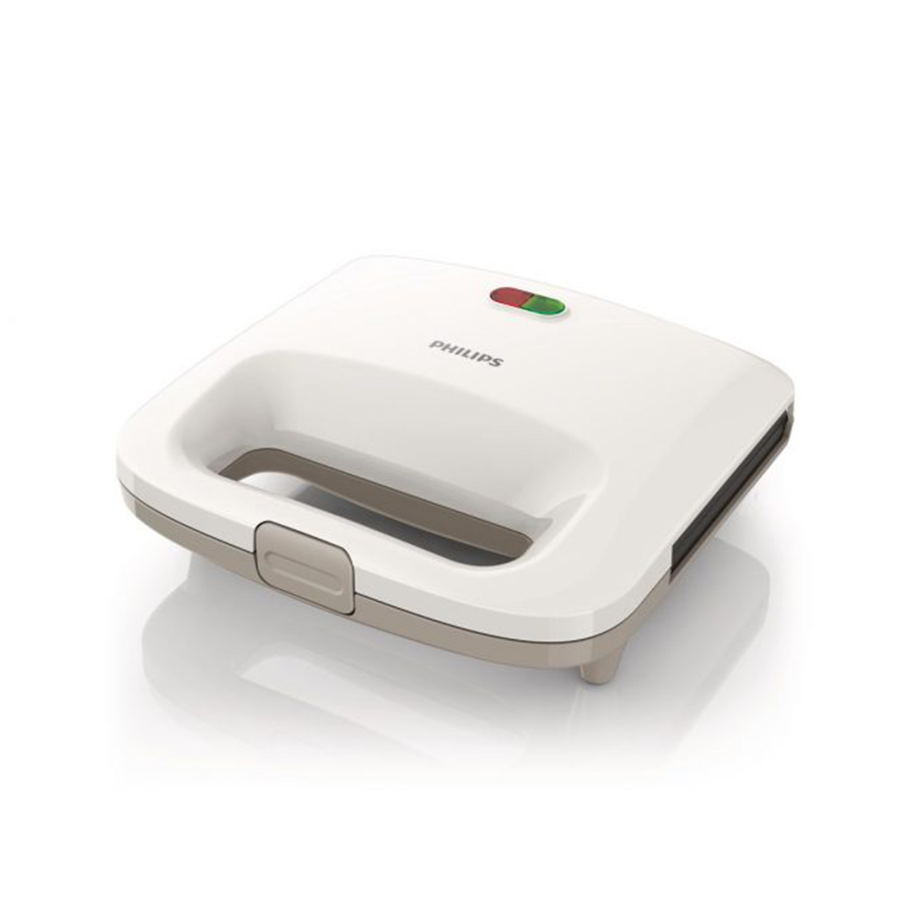

Sumuštinių keptuvės
About me

Past Articles
- Sumuštinių keptuvės | Kokybiška sumuštinių keptuvė internetu
Sumuštinių keptuvės internetinėje parduotuvėje Senukai.lt. Platus kokybiškių prekių pasirinkimas ir greitas užsakymas. Taupyk laiką virtuvėje! - Sumuštinių keptuvės - Aurora TM
Sumuštinių keptuvėje paruošite tikriausiai visų vaikų ir daugelio suaugusiųjų mėgstamų karštų sumuštinių. „Tefal“, „Philips“, „Scarlet“ ir kitų gamintojų sumuštinių keptuvės gera kaina – RDE.LT internetinėje parduotuvėje. Sumuštinių keptuvėse galima ruošti trikampius arba keturkampius sumuštinius. - Sumustiniu keptuve | didelis pasirinkimas internetu RDE.LT
Karštų sumuštinių keptuvė 700W. NEMOKAMAS Pristatymas - perkant už 50eur. ar daugiau | info@keptuves.lt | +37068239420 | Atsiskaitymas per Payserą arba grynaisiais pristaymo metu perm_identity Paskyra arrow_drop_down - Sumuštinių keptuvės - E. Čepausko įmonė
Sumuštinių keptuvės . Prekių filtras . Prekių filtras . Eiliškumas: Rodyti: Išvalyti visus filtrus. Prekių 1 - 20 iš 36 . Eiliškumas: Rodyti: Išvalyti visus filtrus. TOP kaina-34%. Sumuštinių keptuvė su keičiamomis plokštelėmis SEVERIN SA ... - Sumuštinių keptuvės | Buitinė technika internetu
Sumuštinių keptuvė ETA015190000 Pievo 8590393131440. Sumuštinių keptuvė ETA015190000 PievoPradėkite rytą su šiltu ir traškiu sumuštiniu ar kvapnia bandele. - Sumuštinių keptuvės - Krinona
Sumuštinių keptuvės. Sumuštinių keptuvė AU326. Peržiūrėti. Sumuštinių keptuvė AU327. Peržiūrėti +370 648 89972. info@aurora-tm.lt ... - Sumuštinių keptuvė, Cloer 6235 - Krinona
Informacija. Su šia „Cloer“ CLO6235 nerūdijančio plieno sumuštinių keptuve, greitai ir lengvai paruošite skaniai apskrudusius sumuštinius, kurie patiks visai šeimai. Neprilimpančio keptuvės paviršiaus dėka galima kepti be jokių riebalų nesibaiminant, kad sumuštiniai prilips prie keptuvės. - KARŠTŲ SUMUŠTINIŲ KEPTUVĖ
Sumuštinių keptuvės. Rūšiuoti: Aktualumas . Aktualumas Nuo A iki Z Nuo Z iki A Kaina, nuo žemos iki aukštos Kaina, nuo aukščiausios iki žemiausios View. view_comfy view_list view_headline; Yra 10 produktų. Sumuštinių keptuvė UFESA SW7400 1400W Blanco. 54,40 € (Su mokesčiais) Pirkti Detalės. Į ... - Sumuštinių keptuvės | Kokybiška sumuštinių keptuvė ...
Sumuštinių keptuvės - tai puiki alternatyva norint paįvairinti įprastus pusryčius. Patogus ir lengvas fiksavimas, nelimpantis ir sparčiai įkaistantis kepimo pagrindas garantuos itin lengvą ir greitą sumuštinių kepimo procesą. Šiame virtuviniame prietaise automatiškai sureguliuotas kepimo laikas, todėl visuomet žinosite, kada ... - Sumuštinių keptuvės | Krosnelės, kepintuvai, troškintuvai ...
Sumuštinių keptuvė ETA015190000 PievoPradėkite rytą su šiltu ir traškiu sumuštiniu ar kvapnia bandele. Gardus skrudintos duonos aromatas sukvies visą šeima prie stalo, net ir didžiausi miegaliai neatsispirs šioms vilionėms.
Menu
- Sumuštinių keptuvės | Kokybiška sumuštinių keptuvė internetu
- Sumuštinių keptuvės - Aurora TM
- Sumustiniu keptuve | didelis pasirinkimas internetu RDE.LT
- Sumuštinių keptuvės - E. Čepausko įmonė
- Sumuštinių keptuvės | Buitinė technika internetu
- Sumuštinių keptuvės - Krinona
- Sumuštinių keptuvė, Cloer 6235 - Krinona
- KARŠTŲ SUMUŠTINIŲ KEPTUVĖ
- Sumuštinių keptuvės | Kokybiška sumuštinių keptuvė ...
- Sumuštinių keptuvės | Krosnelės, kepintuvai, troškintuvai ...
Sumustiniu keptuve | didelis pasirinkimas internetu RDE.LT

Internetinė parduotuvė www.rde.lt Laimėk elektrinį paspirtuką Naujienos Prekių pristatymas Mokėjimo būdai Naudinga informacija Kontaktai +370 700 77772 | | [email protected] | Prekių krepšelis Prekių krepšelyje 0 Pažiūrėti krepšelį Prekių kategorijos IT produktų išpardavimas Kompiuterinė technika Televizoriai Mobilieji telefonai ir jų aksesuarai Fotoaparatai ir vaizdo kameros Vaizdo ir garso technika Stambioji buitinė technika Montuojamoji buitinė technika Smulkioji buitinė technika Kavos gaminimas Maisto ir gėrimų ruošimas Daugiafunkciai elektriniai puodai ir jų priedai Mikrobangų krosnelės (100) Konvekcinės krosnelės (31) Virduliai (428) Skrudintuvai (139) Sumuštinių keptuvės (65) Makaronų aparatai (7) Duonkepės (3) Garų puodai (8) Gruzdintuvės (23) Elektriniai griliai (85) Vaflinės (31) Vaisių ir daržovių džiovintuvai (10) Ledų gaminimo aparatai (3) Mini viryklės (59) Pjaustymas ir smulkinimas Valymui Drabužių priežiūra Klimato kontrolės įrenginiai Siuvimo ir mezgimo mašinos Vandens filtrai ir jų priedai Virtuvės aksesuarai Žaidimų kompiuteriai ir jų priedai Grožis ir sveikata Riedžiai ir paspirtukai Auto prekės ir navigacija Išmanūs namai Namams ir sodui Aksesuarai Visos internetinės parduotuvės kategorijos Prekių atsiėmimo punktas S. Konarskio g. 2 - 99 Kontaktai Sumuštinių keptuvėje paruošite tikriausiai visų vaikų ir daugelio suaugusiųjų mėgstamų karštų sumuštinių. „Tefal“, „Philips“, „Scarlet“ ir kitų gamintojų sumuštinių keptuvės gera kaina – RDE.LT internetinėje parduotuvėje.
Sumuštinių keptuvėse galima ruošti trikampius arba keturkampius sumuštinius. Pasirinkite modelį, kuris Jums patinka.
Rekomenduojame atkreipti dėmesį į tuos sumuštinių keptuvių modelius, kurie turi keletą skardų. Tuomet galėsite kepti ne tik skirtingų formų karštus sumuštinius, bet ir vaflius, sausainius.
Užsisakykite internetu iš RDE.LT ir pasirinkite patogų pristatymo būdą visoje Lietuvoje. Pradžia Smulkioji buitinė technika Maisto ir gėrimų ruošimas
Sumuštinių keptuvės
Prekių 1-18 iš 65 galimų Puslapis: 1 2 3 > > 4 Esperanza EKT010 Black sumuštinių keptuvė Palyginti Kaina: 7.48 € Į krepšelį Titanum TKT003 sumuštinių keptuvė Palyginti Kaina: 7.49 € Į krepšelį Esperanza EKT011 Black/ Silver sumuštinių keptuvė Palyginti Kaina: 8.48 € Į krepšelį Esperanza TKT002K Black sumuštinių keptuvė Palyginti Kaina: 8.49 € Į krepšelį Esperanza TKT004W Panini White sumuštinių keptuvė Palyginti Kaina: 9.49 € Į krepšelį Esperanza EKT009 Black Tortilla sumuštinių keptuvė Palyginti Kaina: 9.49 € Į krepšelį Esperanza TKT001W White sumuštinių keptuvė Palyginti Kaina: 9.99 € Į krepšelį Beper 90.640H sumuštinių keptuvė Palyginti Kaina: 13.99 € Į krepšelį Beper 90.630A Light Blue sumuštinių keptuvė Palyginti Kaina: 13.99 € Į krepšelį Sencor SSM1100 sumuštinių keptuvė Palyginti Kaina: 13.99 € Į krepšelį Brock SSM3002 sumuštinių keptuvė Palyginti Kaina: 13.99 € Į krepšelį Beper BT.201H White sumuštinių keptuvė Palyginti Kaina: 13.99 € Į krepšelį First FA-5338-4 White sumuštinių keptuvė Palyginti Kaina: 14.49 € Į krepšelį Beper 90.630V Light Green sumuštinių keptuvė Palyginti Kaina: 14.62 € Į krepšelį Clatronic ST3477 Black sumuštinių keptuvė Palyginti Kaina: 14.99 € Į krepšelį RAVANSON OP-1050B White sumuštinių keptuvė Palyginti Kaina: 15.49 € Į krepšelį RAVANSON OP-7020 Black/ Inox sumuštinių keptuvė Palyginti Kaina: 15.49 € Į krepšelį Sencor SSM 4310WH White/ Inox sumuštinių keptuvė Palyginti Kaina: 15.49 € Į krepšelį Prekių 1-18 iš 65 galimų Puslapis: 1 2 3 > > 4 RDE.LT. © 2020 UAB MK TRADE LT Apie autorių teises Lyginamos prekės 0 Palygink dabar Pašalinti viską Prekių pristatymas | Atsiskaitymo būdai | Prekių atsiėmimo punktas Cookies Sutinku Mūsų tinklapyje naudojami slapukai, jie padeda mums padaryti svetainę patogesnę. Sužinoti daugiau .Posted by Jack  Read more
Read more  Comments (15)
Comments (15)  2020.10.29 13:45
2020.10.29 13:45